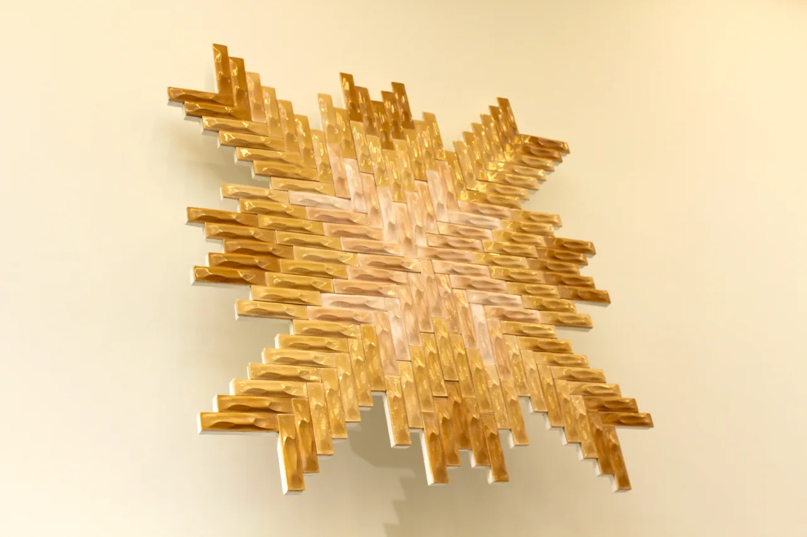
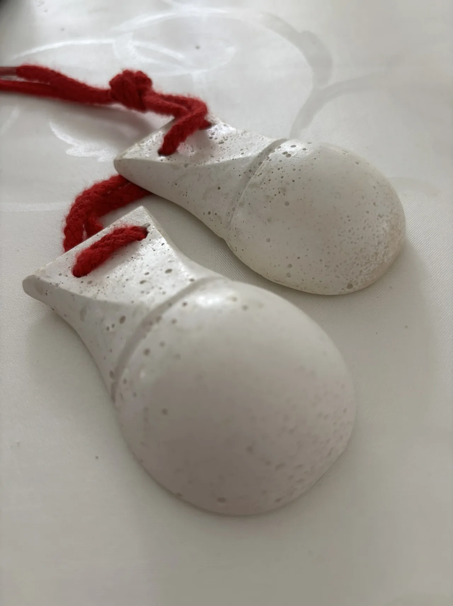
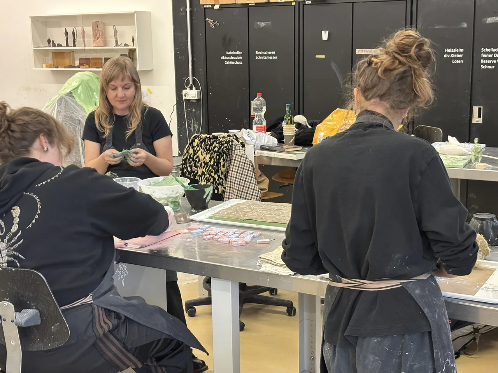
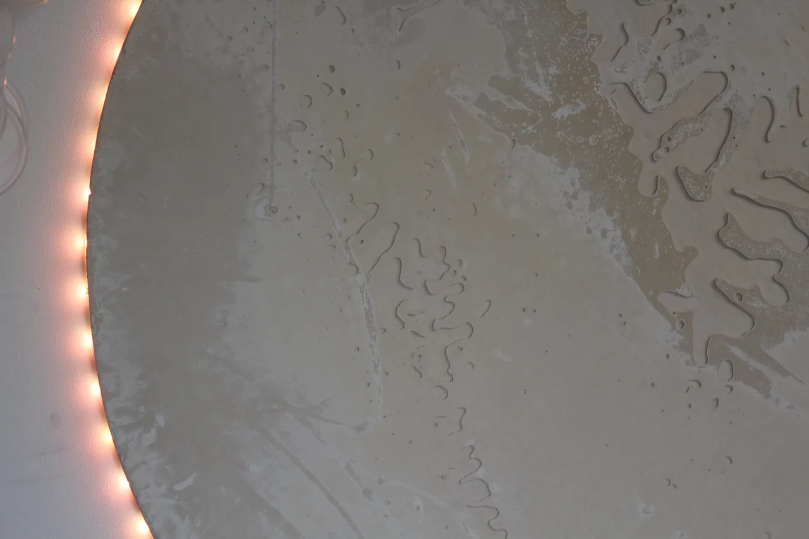
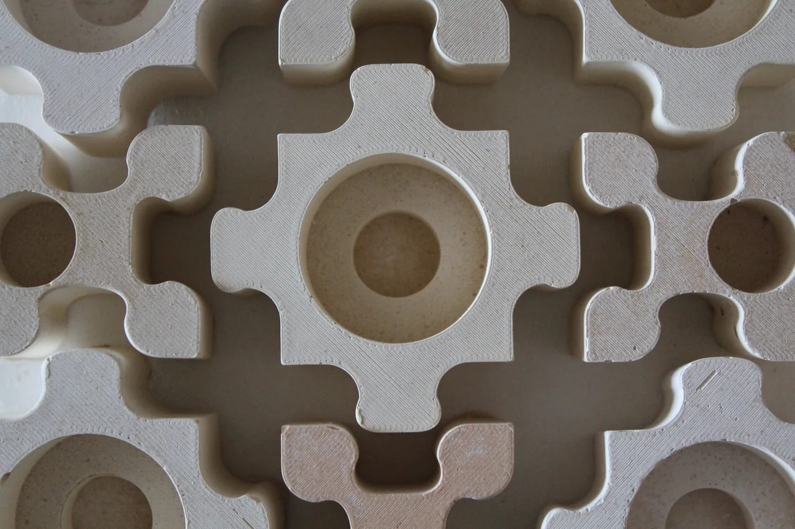
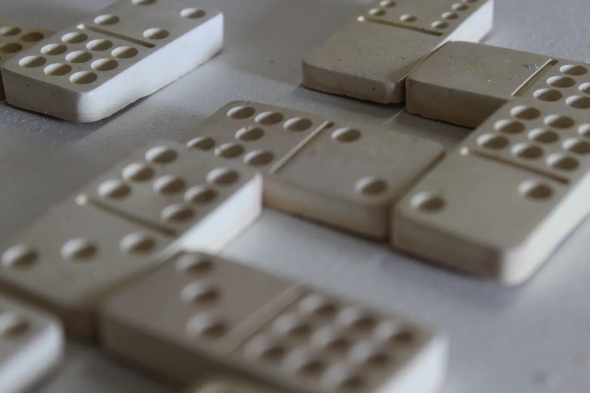
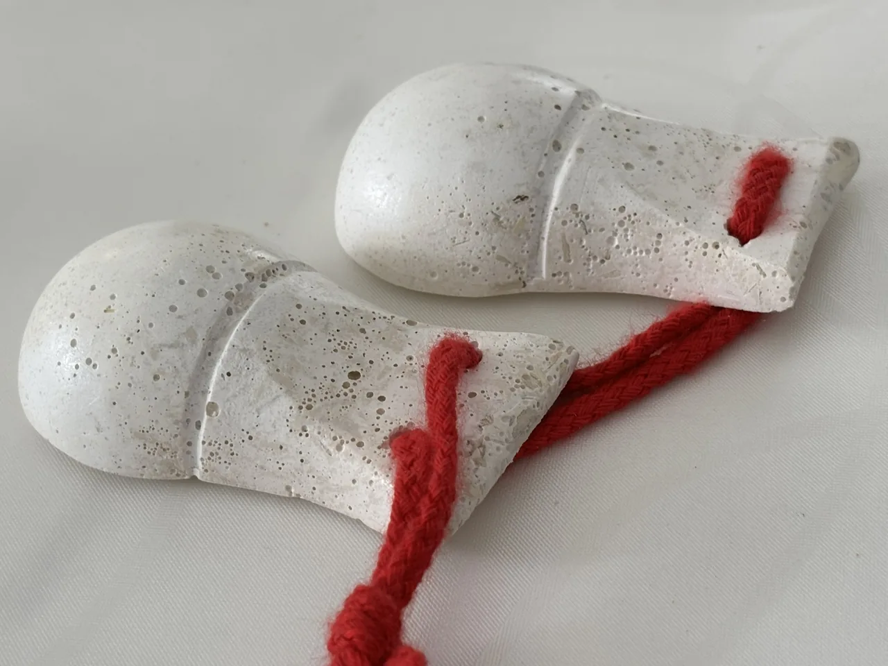
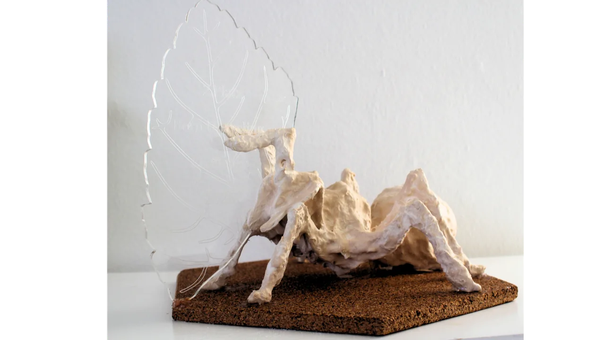

Topia & Mosaic
01Fliesen mit Tiefe. Für Räume mit Gefühl.
Hanf & mineralische BindemittelEine Designpraxis aus Bern
Wir erkunden, was in Materialien steckt.
Und was entstehen kann, wenn wir
gemeinsam mit ihnen gestalten.
Regenerative Materialien. Neue Perspektiven.

Die Praxis
OrbMatter verbindet Materialforschung, Gestaltung und Wissensvermittlung. Mit Hanf, mineralischen Bindemitteln und wiedergewonnenen Ressourcen erkunden wir regenerative Wege des Machens.
Der Name verbindet orbis – den Kreis – mit matter: dem Material und dem, was uns etwas bedeutet. So entstehen Objekte, Begegnungen und Wissen, das weiterwächst.
01 / Workshops & Education
Neugier genügt.
Material mischen, Farben entdecken, eigene Formen schaffen. Unsere Workshops machen Materialwissen greifbar – mit Raum für Experimente und deine Ideen.
Werkzeuge, Materialien und Schutzausrüstung sind dabei.
Das Format gestalten wir passend zu euch.
02 / Design Objects
Kleine Serien. Viel Materialgefühl.Objekte mit Charakter, entwickelt aus der Freude am Experiment. In kleinen Serien gefertigt – mit Aufmerksamkeit für Material, Prozess und das, was bleibt.

Fliesen mit Tiefe. Für Räume mit Gefühl.
Hanf & mineralische Bindemittel
Wenn Material auf Licht trifft.
Form- & Materialexperimente
Kerzenhalter, die sich neu verbinden.
Spielerisch & vielseitig
Stein für Stein ins Gespräch kommen.
Handgefertigt zum Zusammenspielen03 / Open Collaborations
Gute Ideen wachsen im Austausch.Mit Künstler:innen, Designer:innen und Institutionen erkunden wir neue Perspektiven. Von der ersten Frage bis zum gemeinsamen Objekt.

Wie klingt ein Material? Handgefertigte Kastagnetten verbinden Materialexperimente mit Rhythmus, Berührung und Spiel.

Aus einer Haltung wird eine Form. Individuelle Trophäen machen die Idee des Kreislaufs zu einem greifbaren Zeichen der Wertschätzung.
Der Mensch hinter OrbMatter
Ich bin Sarah – Designerin, Künstlerin und Materialforscherin. Mit OrbMatter verbinde ich Gestaltung, Materialentwicklung und die Freude daran, Wissen weiterzugeben.
Mich interessiert, wie wir mit dem gestalten können, was uns umgibt. Bewusster, ressourcenschonender und im Austausch miteinander.
Lernen wir uns kennen auf LinkedIn (neuer Tab)Offen für Ideen & Begegnungen
Eine Frage, eine Workshopidee oder ein gemeinsames Projekt?
Schreib uns. Wir freuen uns, von dir zu hören.